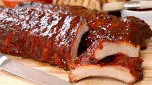

RIBS 3/2/1 Method
The best damn RIBS you've had on the East side of the Mississippi

Ingredients (Qty.)
- Ribs (1 rack)
- BBQ Rub
- Apple Juice (12 oz)
- Butter (2 Tsps)
- Brown Sugar (2 Tsps)
- BBQ Sauce
Instructions
- Defrost Ribs completely
- Set Smoker to 250F and 8 hours
- Pat ribs down with paper towel
- Put BBQ Rub on Ribs
- Ribs in smoker for 3 hours
- Put ribs in tin foild and add Applie Juice, Butter, & Brown Sugar. Wrap ribs tight.
- Place ribs back in smoker for 1.5 to 2 hours. The longer the more they will fall off bone.
- Take ribs out of smoker and put on as much BBQ as you want.
- Place Ribs back in smoker 1 more time for 30 minutes to 1 hour.